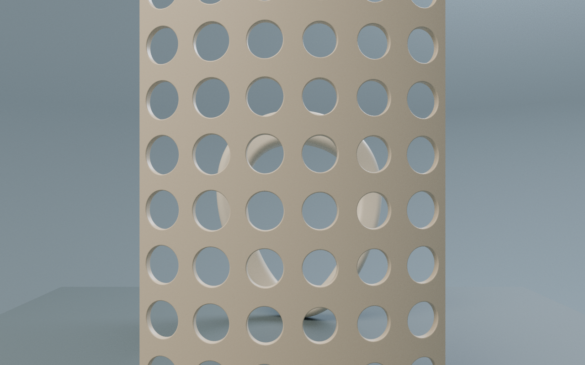
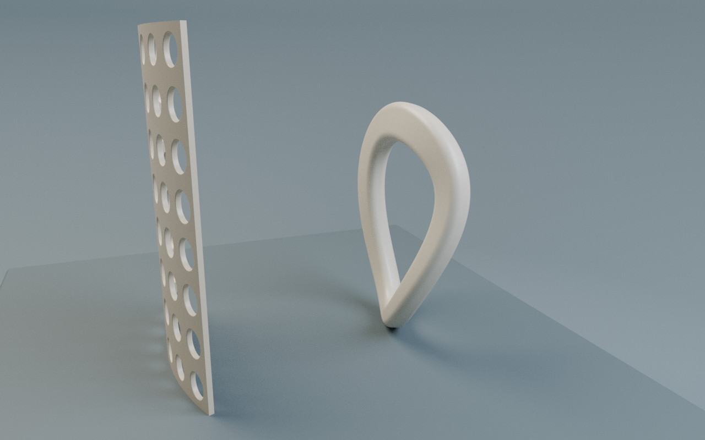

真实 Blender CPU 离线视图。实时 GPU 画质、闪烁与手机性能未验。
01 / 遮挡 · 两件物的间距
先看见遮挡
两件独立物体保持固定，前后距离将观看变成一条有深度的路径。

前景是一片 500 mm 高的穿孔厚壳，后景是一件 386.3 mm 高的回环雕塑。两者没有被放大为建筑；它们仍是案上的物，场景单位仍是米。
镜头先退开，交代间距。幕与环不接触，幕的孔洞也不是平面贴图。遮挡并非缺失，而是两个真实表面在特定视点下的关系。
下一视点 · 穿透 · 孔成为取景框 ↗02 / 穿透 · 孔成为取景框
视线穿过，身体留在外面
近处的厚壳切分远处的回环。同一个孔会随视点改变，不能以孔面积代替可见面积。

靠近正面，远处的连续曲线被分成片段。孔缘的厚度使“穿过”成为一段空间，而不是一个屏幕遮罩。
这个视点不是穿孔飞行，镜头保留在厚壳外。有限射线只证明指定视线的命中关系，不能称作整体可见率、透光率或可通行面积。
下一视点 · 绕行 · 显露背后的回环 ↗03 / 绕行 · 显露背后的回环
绕开，才看见完整
沿幕的侧面移动，回环重新连成连续轮廓。改变的是相机，不是物体。

向侧面绕开，原先被幕遮住的回环得以显露。两件模型的位置、尺度与材质始终相同，发生变化的是观看位置。
这一章将绕行作为导航语法：不是更换陈列品，而是沿同一世界理解前后关系。键盘目录与空间入口指向相同章节。
下一视点 · 遮挡 · 两件物的间距 ↗